Una educadora de párvulos acompaña este nivel, y además es instructora de yoga infantil. A esta edad el grupo ya trabaja con mayor autonomía, en proyectos que sostienen entre ellos.
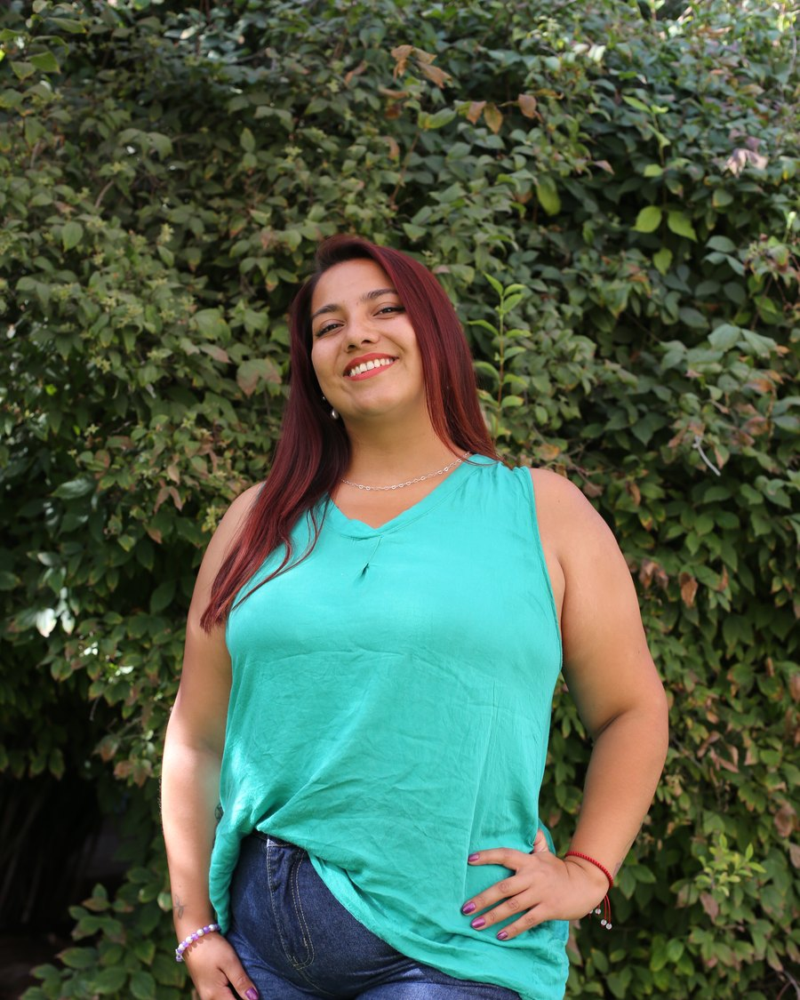
CamilaEducadora de párvulos · Instructora de yoga infantil
Documentación pedagógica
Así aprenden en Aula Sole
Los grandes. Investigaciones que duran semanas, hipótesis propias y preguntas que nadie les contesta de entrada. Acá se los toma en serio como artistas, científicos y pensadores.
Cada proceso queda registrado con fotos y palabras: lo que el grupo preguntó, lo que probó y lo que descubrió. En la filosofía Reggio Emilia, en la que Bianca Stella se inspira, a esto se le llama documentar: hacer visible cómo aprende la infancia.
Algunos proyectos de Aula Sole 2026
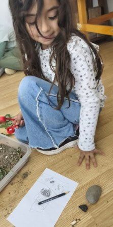
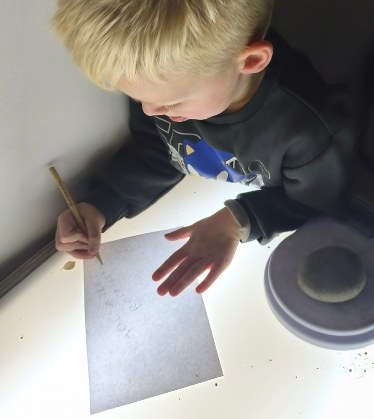
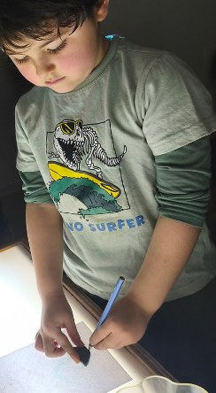
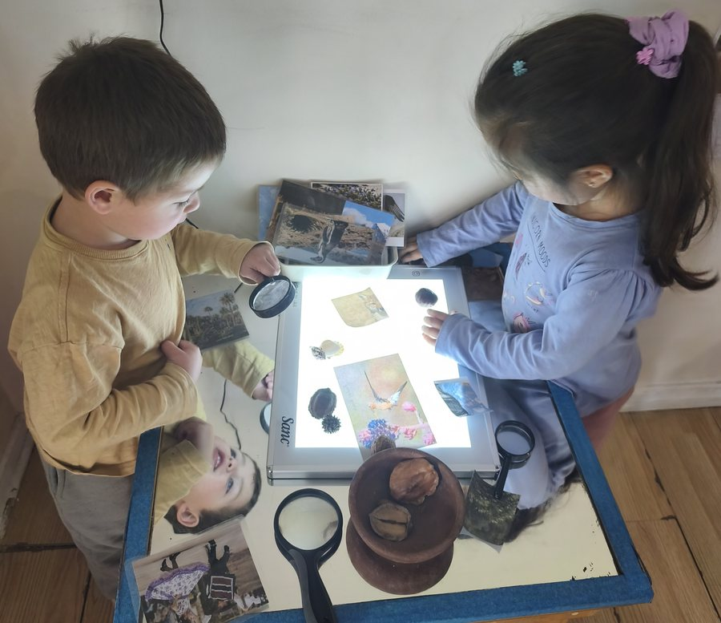
cap. I
Una bandeja, múltiples caminos
de investigación: explorar, registrar, comparar y medir
Isaías, 5 años y 3 meses
Contó sus piedras y registró el peso de la más grande.
Eithan, 5 años y 4 meses
Dibujó el contorno de una piedra negra que imaginó proveniente de una mina.
Ema, 6 años y 5 meses
Representó sus hallazgos y luego los ordenó del más grande al más pequeño.
Facundo H., 3 años y 7 meses
Al disponer porotos sobre la bandeja, descubrió otra relación: “Mira, Cami, hice la letra C con porotos”.
Investigación
En otro encuentro, dispusimos bandejas por duplas con tierra y elementos naturales, acompañadas de hojas para registrar y graneras para investigar. Sin una única forma de comenzar, aparecieron distintos recorridos: tocar, observar, dibujar, ordenar, comparar y pesar.
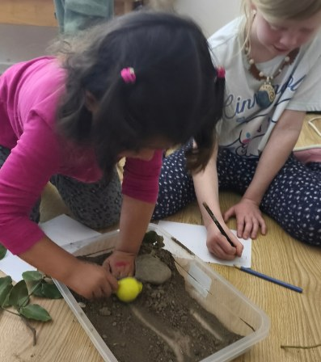
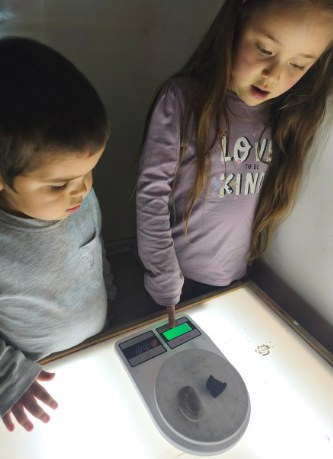
Luciana (3 años y 7 meses) exploraba mientras verbalizaba sus hallazgos e Isabella los registraba sobre el papel. Cerca de ellas, Agustina y Facundo B. llevaron piedras a la granera.
“Cami, son tres números”Agustina, 5 años y 2 meses
“Debe ser pesado”Facundo B., 4 años
Cada niña y niño encontró algo distinto que investigar. El dibujo, el número, la conversación, la comparación y la clasificación se entrelazaron como diferentes lenguajes para hacer visible el pensamiento.
Investigacióncap. II
Observar para reconstruir
insectos con materiales naturales
A partir de imágenes incompletas, los niños y niñas miraron con atención y se hicieron preguntas. Con hojas, ramas y cortezas, recrearon partes de los insectos según su forma, tamaño y color. Cada decisión fue una interpretación y una nueva manera de entender lo que observaron.
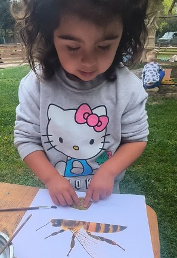
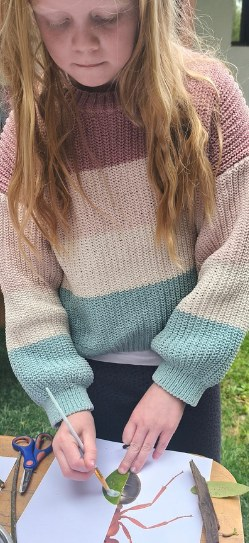
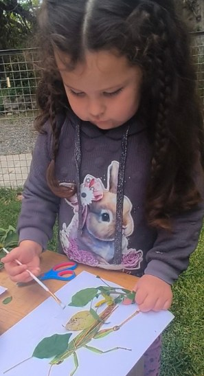
“Mira su guatita con hoja.”Luciana, 3 años y 7 meses, mientras construía el abdomen de una abeja
“Haré el cuerpo con hojas. Las hormigas son pequeñas y aquí es grande.”Isabella, 7 años y 7 meses
“Haré el saltamontes de hojas verdes.”Aymé, 4 años y 6 meses
Investigacióncap. III
Cuando la naturaleza se encuentra con el arte
pintar, transformar y otorgar nuevos significados
En el patio, hojas, témperas, pinceles, rodillos y otros elementos naturales abrieron una nueva posibilidad de encuentro. Los materiales que anteriormente habían sido recolectados, observados y medidos comenzaron ahora a transformarse a través del lenguaje artístico.
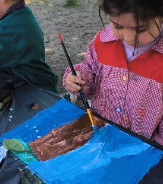
“Y también el cielo de noche.”Eloísa, 4 años y 8 meses
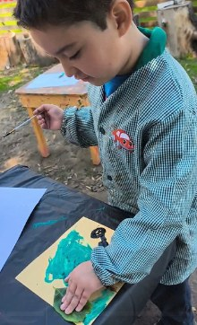
“Yo pintaré el árbol del patio, me gusta mucho.”Santiago, 7 años y 4 meses
Eloísa construyó su propia representación: pintó un tronco e incorporó una hoja sobre él. Santiago utilizó una hoja como herramienta para representar la parte verde del árbol.
Investigación
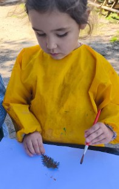
“Mira, Cami, pinto la hoja.”Odele, 4 años y 6 meses
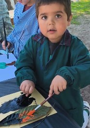
“Pintaré la hoja grande de arcoíris.”Facundo B., 4 años
Una hoja podía ser aquello que se pinta. Pero también podía convertirse en pincel, follaje, color o parte de una representación.
El material no determinó la producción: fueron las ideas de los niños y niñas las que transformaron sus posibilidades.
Investigación
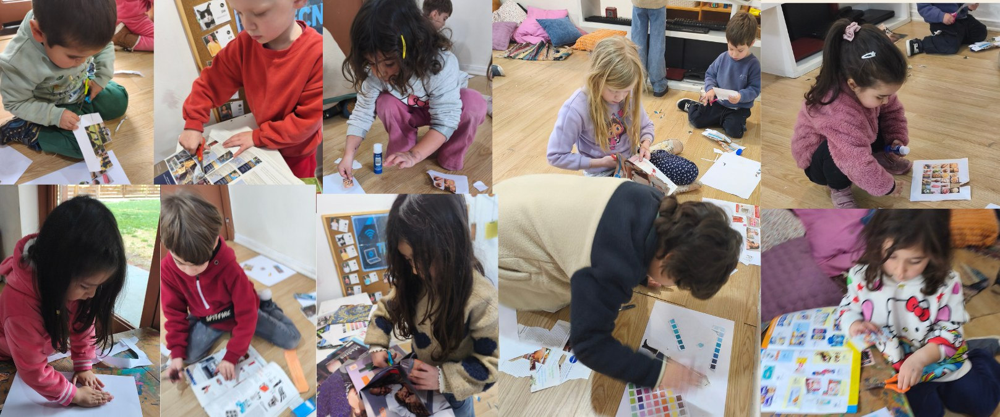
cap. IV
Lo que amo
también habla de mí
Detrás de cada elección hay una historia, un gusto y una parte de quienes somos. A través del collage, los niños y niñas nos invitan a conocer sus mundos, expresando con cada imagen escogida aquello que los representa y los hace únicos.
Identidad y emociones
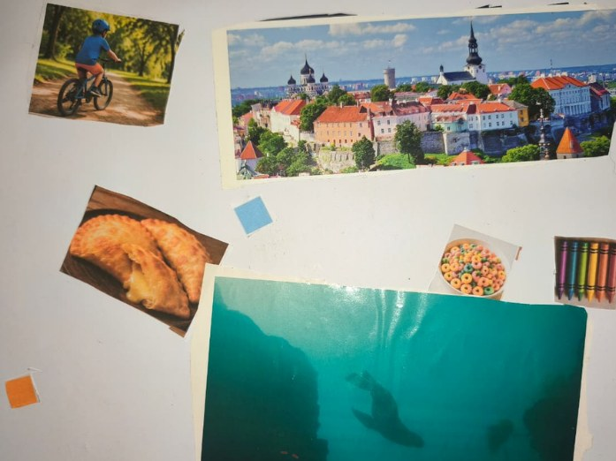
“Me gusta el mar, me encantan las empanadas de queso y pintar”Isaías, 5 años y 1 mes
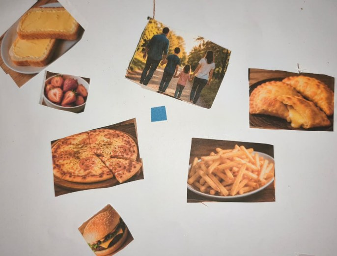
“Yo como pizza y frutillas, y me gusta mi familia”Eloísa, 4 años y 6 meses
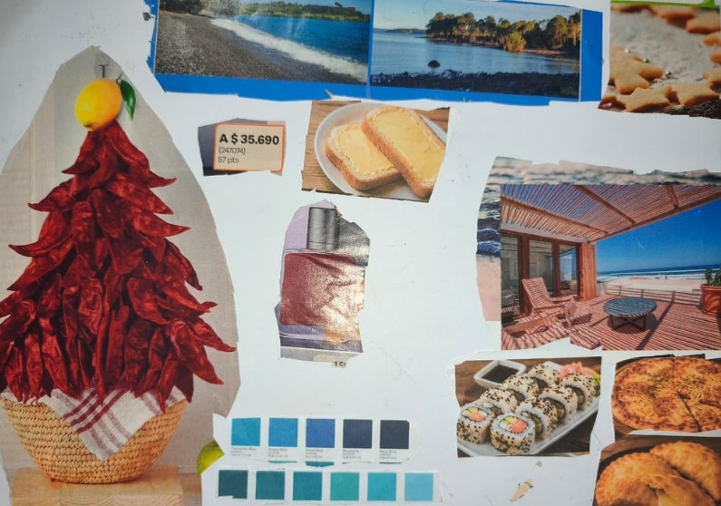
“Me gustan las empanadas de queso y el sushi, y el color rojo”Emiliano, 6 años y 4 meses
Identidad y emociones
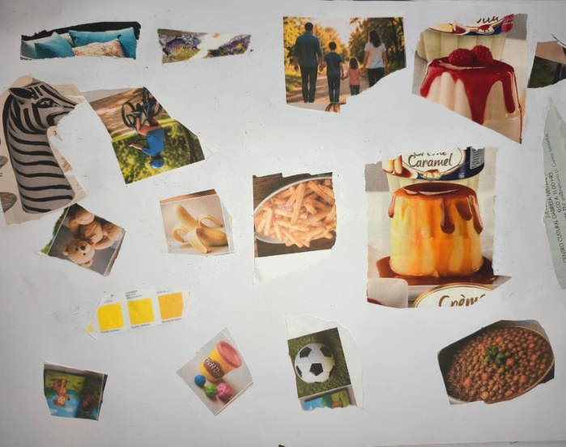
“Me gusta el flan rosa, las papas y pasear con mi familia”Facundo H., 3 años y 5 meses
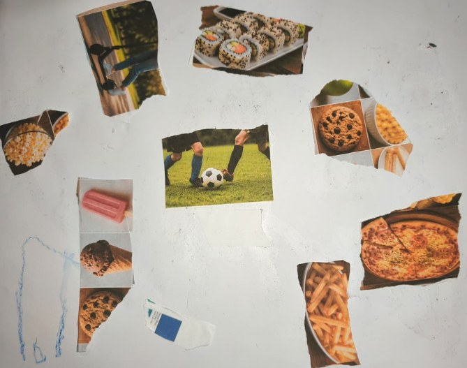
“Yo juego a la pelota, me gusta Palestino, el sushi es rico”Facundo B., 3 años y 10 meses
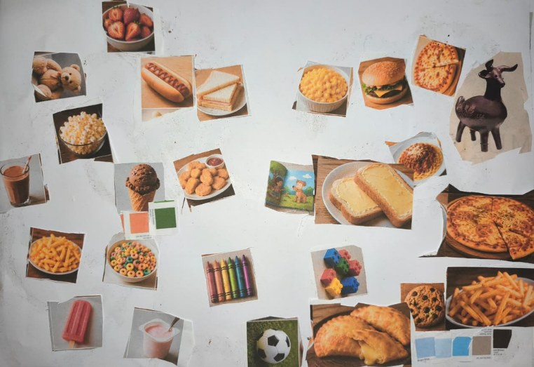
“Yo como helado, palomitas y me gusta pintar”Luciana, 3 años y 5 meses
Identidad y emociones
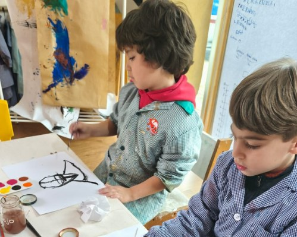
cap. V
Así me veo
así me represento
Cada autorretrato revela una manera única de responder a la pregunta: ¿cómo me veo? Mientras Luciana se representa junto al mar, Agustina y Ema se dibujan como los personajes animados que tanto disfrutan. Santiago explora una forma diferente de mostrar quién es, experimentando con las líneas, el movimiento y la expresión del trazo. Emiliano observa atentamente su reflejo y mezcla distintos colores hasta encontrar el tono de cabello que más se parece al suyo. Eloísa, en cambio, pinta su cabello negro y comenta con orgullo: “A mí me gusta mi pelo negro”.
En cada obra aparecen decisiones, elecciones y detalles que hacen visible la diversidad de miradas con las que los niños y niñas responden a una misma invitación: representarse a sí mismos.
Identidad y emocionescap. VI
Me miro
y me descubro
Jugamos con nuestra imagen sobre una mica transparente en las mesas de luz, transformando nuestra fotografía con colores e imaginación. En cada trazo y en cada mirada, comenzamos a descubrir quiénes somos.
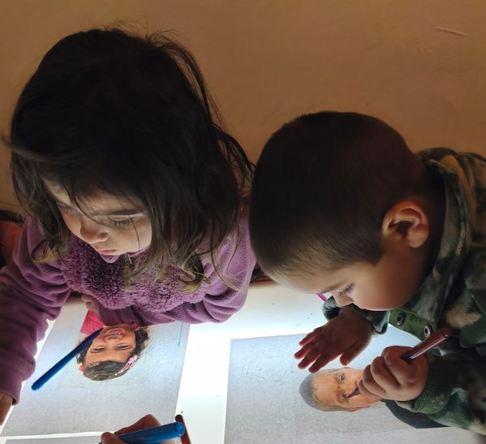
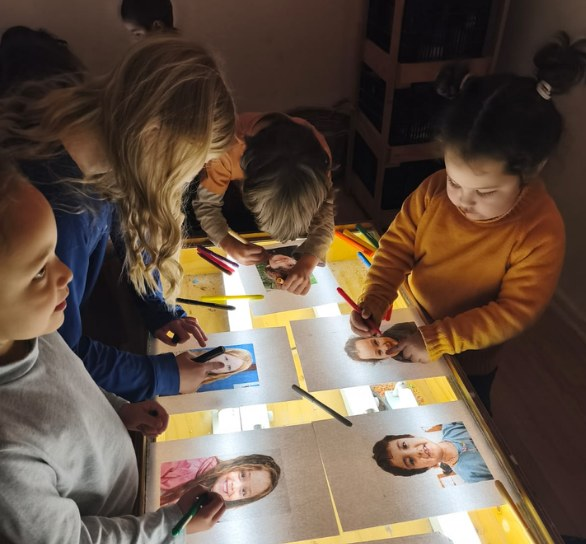
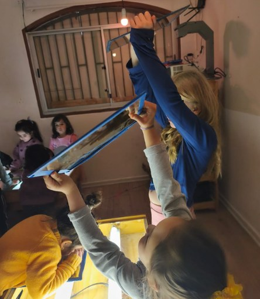
“Mi pelo es negro”Luciana, 3 años y 5 meses
“Yo tengo pelo corto y ojos de otro color”Facundo B., 3 años y 10 meses
“Yo tengo los ojos verdes y en la foto tenía un brillo”Agustina, 5 años
“Mi pelo es amarillo y largo, y tengo ojos azul”Isabella, 7 años y 5 meses
Identidad y emocionescap. VII
¿Qué historia cuentan mis emociones hoy?
dibujar lo que se siente
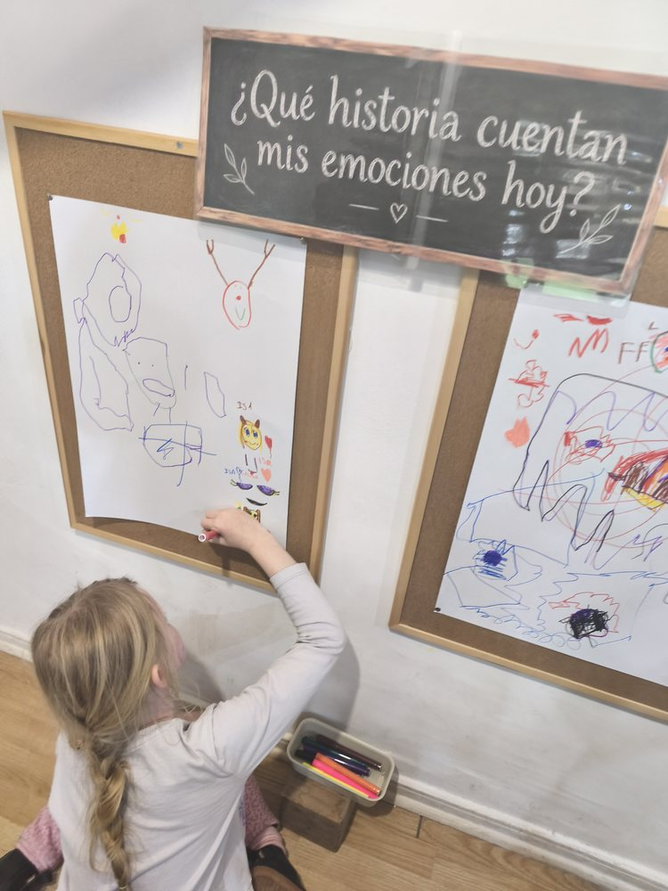
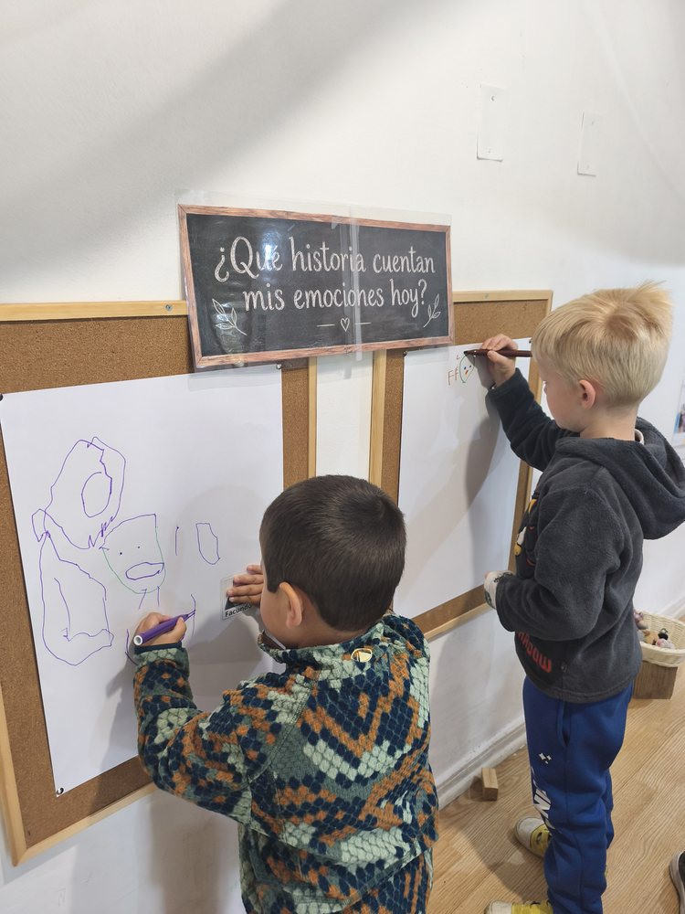
Una pregunta en la pizarra invita a detenerse. Los niños y niñas responden con trazos, colores, caras y, cada vez más, con letras. Ponerle imagen a lo que se siente es el primer paso para poder nombrarlo y compartirlo con otros.
Identidad y emocionescap. VIII
Escribir para contar
las primeras letras con sentido
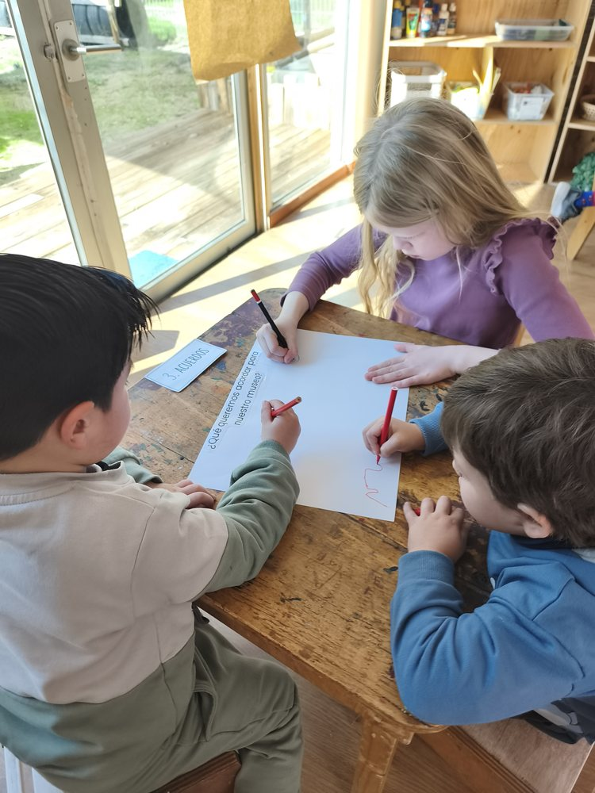
En Sole la escritura aparece cuando hace falta: para registrar un hallazgo, anotar una idea o firmar un dibujo. Los niños y niñas prueban letras, copian palabras que les interesan y se leen unos a otros lo que escribieron. No se trata de llenar fichas, sino de descubrir que lo escrito sirve para contar algo.
“Mira, Cami, hice la letra C con porotos.”Facundo H., 3 años y 7 meses
Lecto-escritura
1 / 6
¿Quieres conocer Aula Sole?
La mejor forma de saber si es el lugar para tu hijo o hija es caminarlo.